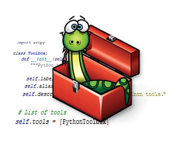
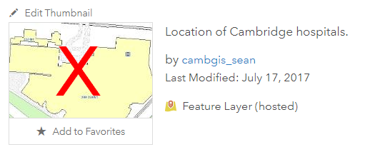

Using the ArcGIS API for Python in Cambridge
Sean Sweeney, GIS Programmer Analyst
City of Cambridge, MA
NEARC - Newport, RI
November 6, 2017
Esri Technical Session:
WebGIS Administration with the
Python API
Jeff Bigos
Wednesday November 8, 2017 9:45am - 10:15am
Ballroom Salon I (3rd Level)
What is the Python API?
"Python API for your Web GIS." - Rohit Singh, Lead Developer of Python API

What isn't the Python API?

History
